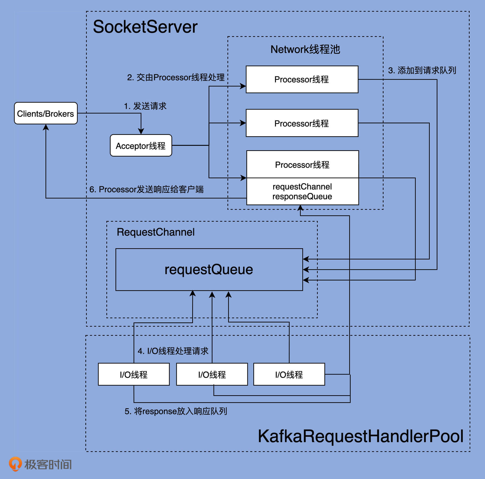
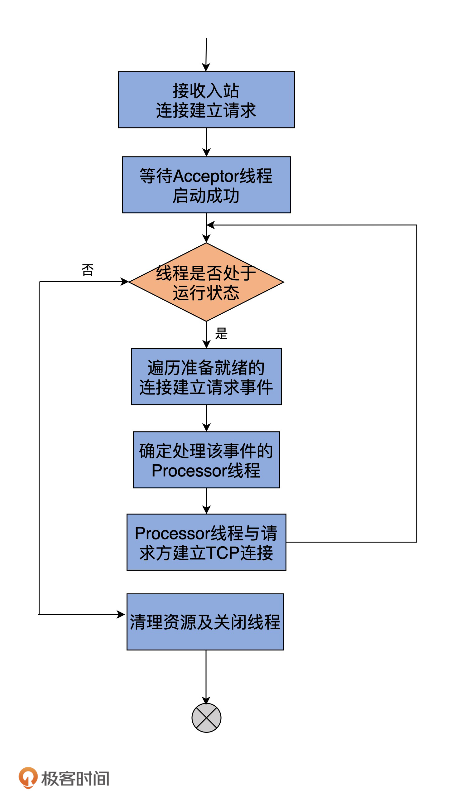
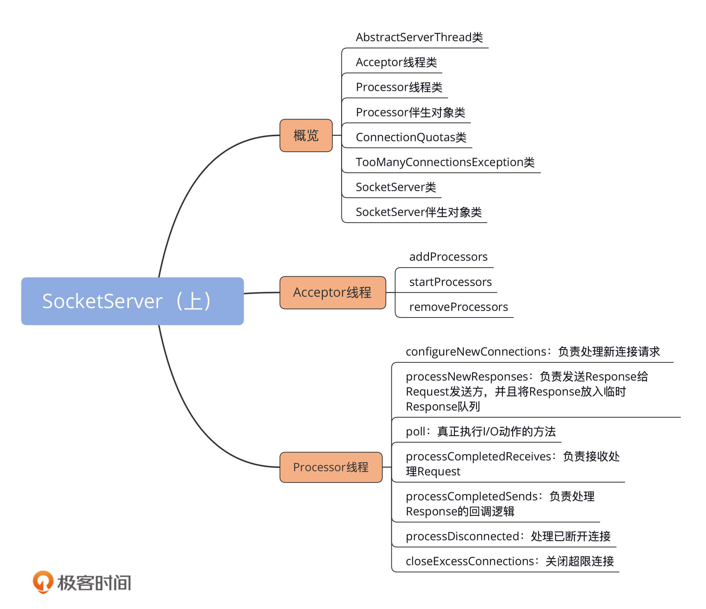

- 00 导读 构建Kafka工程和源码阅读环境、Scala语言热身.md
- 00 开篇词 阅读源码，逐渐成了职业进阶道路上的“必选项”.md
- 00 重磅加餐 带你快速入门Scala语言.md
- 01 日志段：保存消息文件的对象是怎么实现的？.md
- 02 日志（上）：日志究竟是如何加载日志段的？.md
- 03 日志（下）：彻底搞懂Log对象的常见操作.md
- 04 索引（上）：改进的二分查找算法在Kafka索引的应用.md
- 05 索引（下）：位移索引和时间戳索引的区别是什么？.md
- 06 请求通道：如何实现Kafka请求队列？.md
- 07 SocketServer（上）：Kafka到底是怎么应用NIO实现网络通信的？.md
- 08 SocketServer（中）：请求还要区分优先级？.md
- 09 SocketServer（下）：请求处理全流程源码分析.md
- 10 KafkaApis：Kafka最重要的源码入口，没有之一.md
- 11 Controller元数据：Controller都保存有哪些东西？有几种状态？.md
- 12 ControllerChannelManager：Controller如何管理请求发送？.md
- 13 ControllerEventManager：变身单线程后的Controller如何处理事件？.md
- 14 Controller选举是怎么实现的？.md
- 15 如何理解Controller在Kafka集群中的作用？.md
- 16 TopicDeletionManager： Topic是怎么被删除的？.md
- 17 ReplicaStateMachine：揭秘副本状态机实现原理.md
- 18 PartitionStateMachine：分区状态转换如何实现？.md
- 19 TimingWheel：探究Kafka定时器背后的高效时间轮算法.md
- 20 DelayedOperation：Broker是怎么延时处理请求的？.md
- 21 AbstractFetcherThread：拉取消息分几步？.md
- 22 ReplicaFetcherThread：Follower如何拉取Leader消息？.md
- 23 ReplicaManager（上）：必须要掌握的副本管理类定义和核心字段.md
- 24 ReplicaManager（中）：副本管理器是如何读写副本的？.md
- 25 ReplicaManager（下）：副本管理器是如何管理副本的？.md
- 26 MetadataCache：Broker是怎么异步更新元数据缓存的？.md
- 27 消费者组元数据（上）：消费者组都有哪些元数据？.md
- 28 消费者组元数据（下）：Kafka如何管理这些元数据？.md
- 29 GroupMetadataManager：组元数据管理器是个什么东西？.md
- 30 GroupMetadataManager：位移主题保存的只是位移吗？.md
- 31 GroupMetadataManager：查询位移时，不用读取位移主题？.md
- 32 GroupCoordinator：在Rebalance中，Coordinator如何处理成员入组？.md
- 33 GroupCoordinator：在Rebalance中，如何进行组同步？.md
- 特别放送（一）经典的Kafka学习资料有哪些？.md
- 特别放送（三）我是怎么度过日常一天的？.md
- 特别放送（二）一篇文章带你了解参与开源社区的全部流程.md
- 特别放送（五） Kafka 社区的重磅功能：移除 ZooKeeper 依赖.md
- 特别放送（四）20道经典的Kafka面试题详解.md
- 结束语 源码学习，我们才刚上路呢.md
07 SocketServer（上）：Kafka到底是怎么应用NIO实现网络通信的？
你好，我是胡夕。这节课我们来说说Kafka底层的NIO通信机制源码。
在谈到Kafka高性能、高吞吐量实现原理的时候，很多人都对它使用了Java NIO这件事津津乐道。实际上，搞懂“Kafka究竟是怎么应用NIO来实现网络通信的”，不仅是我们掌握Kafka请求全流程处理的前提条件，对我们了解Reactor模式的实现大有裨益，而且还能帮助我们解决很多实际问题。
比如说，当Broker处理速度很慢、需要优化的时候，你只有明确知道SocketServer组件的工作原理，才能制定出恰当的解决方案，并有针对性地给出对应的调优参数。
那么，今天，我们就一起拿下这个至关重要的NIO通信机制吧。
网络通信层
在深入学习Kafka各个网络组件之前，我们先从整体上看一下完整的网络通信层架构，如下图所示：

可以看出，Kafka网络通信组件主要由两大部分构成：SocketServer和KafkaRequestHandlerPool。
SocketServer组件是核心，主要实现了Reactor模式，用于处理外部多个Clients（这里的Clients指的是广义的Clients，可能包含Producer、Consumer或其他Broker）的并发请求，并负责将处理结果封装进Response中，返还给Clients。
KafkaRequestHandlerPool组件就是我们常说的I/O线程池，里面定义了若干个I/O线程，用于执行真实的请求处理逻辑。
两者的交互点在于SocketServer中定义的RequestChannel对象和Processor线程。对了，我所说的线程，在代码中本质上都是Runnable类型，不管是Acceptor类、Processor类，还是后面我们会单独讨论的KafkaRequestHandler类。
讲到这里，我稍微提示你一下。在第9节课，我会给出KafkaRequestHandlerPool线程池的详细介绍。但你现在需要知道的是，KafkaRequestHandlerPool线程池定义了多个KafkaRequestHandler线程，而KafkaRequestHandler线程是真正处理请求逻辑的地方。和KafkaRequestHandler相比，今天所说的Acceptor和Processor线程从某种意义上来说，只能算是请求和响应的“搬运工”罢了。
了解了完整的网络通信层架构之后，我们要重点关注一下SocketServer组件。这个组件是Kafka网络通信层中最重要的子模块。它下辖的Acceptor线程、Processor线程和RequestChannel等对象，都是实施网络通信的重要组成部分。你可能会感到意外的是，这套线程组合在源码中有多套，分别具有不同的用途。在下节课，我会具体跟你分享一下，不同的线程组合会被应用到哪些实际场景中。
下面我们进入到SocketServer组件的学习。
SocketServer概览
SocketServer组件的源码位于Kafka工程的core包下，具体位置是src/main/scala/kafka/network路径下的SocketServer.scala文件。
SocketServer.scala可谓是元老级的源码文件了。在Kafka的源码演进历史中，很多代码文件进进出出，这个文件却一直“坚强地活着”，而且还在不断完善。如果翻开它的Git修改历史，你会发现，它最早的修改提交历史可回溯到2011年8月，足见它的资历之老。
目前，SocketServer.scala文件是一个近2000行的大文件，共有8个代码部分。我使用一张思维导图帮你梳理下：

乍一看组件有很多，但你也不必担心，我先对这些组件做个简单的介绍，然后我们重点学习一下Acceptor类和Processor类的源码。毕竟，这两个类是实现网络通信的关键部件。另外，今天我给出的都是SocketServer组件的基本情况介绍，下节课我再详细向你展示它的定义。
- AbstractServerThread类：这是Acceptor线程和Processor线程的抽象基类，定义了这两个线程的公有方法，如shutdown（关闭线程）等。我不会重点展开这个抽象类的代码，但你要重点关注下CountDownLatch类在线程启动和线程关闭时的作用。
如果你苦于寻找Java线程安全编程的最佳实践案例，那一定不要错过CountDownLatch这个类。Kafka中的线程控制代码大量使用了基于CountDownLatch的编程技术，依托于它来实现优雅的线程启动、线程关闭等操作。因此，我建议你熟练掌握它们，并应用到你日后的工作当中去。
-
Acceptor线程类：这是接收和创建外部TCP连接的线程。每个SocketServer实例只会创建一个Acceptor线程。它的唯一目的就是创建连接，并将接收到的Request传递给下游的Processor线程处理。
-
Processor线程类：这是处理单个TCP连接上所有请求的线程。每个SocketServer实例默认创建若干个（num.network.threads）Processor线程。Processor线程负责将接收到的Request添加到RequestChannel的Request队列上，同时还负责将Response返还给Request发送方。
-
Processor伴生对象类：仅仅定义了一些与Processor线程相关的常见监控指标和常量等，如Processor线程空闲率等。
-
ConnectionQuotas类：是控制连接数配额的类。我们能够设置单个IP创建Broker连接的最大数量，以及单个Broker能够允许的最大连接数。
-
TooManyConnectionsException类：SocketServer定义的一个异常类，用于标识连接数配额超限情况。
-
SocketServer类：实现了对以上所有组件的管理和操作，如创建和关闭Acceptor、Processor线程等。
-
SocketServer伴生对象类：定义了一些有用的常量，同时明确了SocketServer组件中的哪些参数是允许动态修改的。
Acceptor线程
经典的Reactor模式有个Dispatcher的角色，接收外部请求并分发给下面的实际处理线程。在Kafka中，这个Dispatcher就是Acceptor线程。
我们看下它的定义：
private[kafka] class Acceptor(val endPoint: EndPoint,
val sendBufferSize: Int,
val recvBufferSize: Int,
brokerId: Int,
connectionQuotas: ConnectionQuotas,
metricPrefix: String) extends AbstractServerThread(connectionQuotas) with KafkaMetricsGroup {
// 创建底层的NIO Selector对象
// Selector对象负责执行底层实际I/O操作，如监听连接创建请求、读写请求等
private val nioSelector = NSelector.open()
// Broker端创建对应的ServerSocketChannel实例
// 后续把该Channel向上一步的Selector对象注册
val serverChannel = openServerSocket(endPoint.host, endPoint.port)
// 创建Processor线程池，实际上是Processor线程数组
private val processors = new ArrayBuffer[Processor]()
private val processorsStarted = new AtomicBoolean
private val blockedPercentMeter = newMeter(s"${metricPrefix}AcceptorBlockedPercent",
"blocked time", TimeUnit.NANOSECONDS, Map(ListenerMetricTag -> endPoint.listenerName.value))
......
}
从定义来看，Acceptor线程接收5个参数，其中比较重要的有3个。
- endPoint。它就是你定义的Kafka Broker连接信息，比如PLAINTEXT://localhost:9092。Acceptor需要用到endPoint包含的主机名和端口信息创建Server Socket。
- sendBufferSize。它设置的是SocketOptions的SO_SNDBUF，即用于设置出站（Outbound）网络I/O的底层缓冲区大小。该值默认是Broker端参数socket.send.buffer.bytes的值，即100KB。
- recvBufferSize。它设置的是SocketOptions的SO_RCVBUF，即用于设置入站（Inbound）网络I/O的底层缓冲区大小。该值默认是Broker端参数socket.receive.buffer.bytes的值，即100KB。
说到这儿，我想给你提一个优化建议。如果在你的生产环境中，Clients与Broker的通信网络延迟很大（比如RTT>10ms），那么我建议你调大控制缓冲区大小的两个参数，也就是sendBufferSize和recvBufferSize。通常来说，默认值100KB太小了。
除了类定义的字段，Acceptor线程还有两个非常关键的自定义属性。
- nioSelector：是Java NIO库的Selector对象实例，也是后续所有网络通信组件实现Java NIO机制的基础。如果你不熟悉Java NIO，那么我推荐你学习这个系列教程：Java NIO。
- processors：网络Processor线程池。Acceptor线程在初始化时，需要创建对应的网络Processor线程池。可见，Processor线程是在Acceptor线程中管理和维护的。
既然如此，那它就必须要定义相关的方法。Acceptor代码中，提供了3个与Processor相关的方法，分别是addProcessors、startProcessors和removeProcessors。鉴于它们的代码都非常简单，我用注释的方式给出主体逻辑的步骤：
addProcessors
private[network] def addProcessors(
newProcessors: Buffer[Processor], processorThreadPrefix: String): Unit = synchronized {
processors ++= newProcessors // 添加一组新的Processor线程
if (processorsStarted.get) // 如果Processor线程池已经启动
startProcessors(newProcessors, processorThreadPrefix) // 启动新的Processor线程
}
startProcessors
private[network] def startProcessors(processorThreadPrefix: String): Unit = synchronized {
if (!processorsStarted.getAndSet(true)) { // 如果Processor线程池未启动
startProcessors(processors, processorThreadPrefix) // 启动给定的Processor线程
}
}
private def startProcessors(processors: Seq[Processor], processorThreadPrefix: String): Unit = synchronized {
processors.foreach { processor => // 依次创建并启动Processor线程
// 线程命名规范：processor线程前缀-kafka-network-thread-broker序号-监听器名称-安全协议-Processor序号
// 假设为序号为0的Broker设置PLAINTEXT://localhost:9092作为连接信息，那么3个Processor线程名称分别为：
// data-plane-kafka-network-thread-0-ListenerName(PLAINTEXT)-PLAINTEXT-0
// data-plane-kafka-network-thread-0-ListenerName(PLAINTEXT)-PLAINTEXT-1
// data-plane-kafka-network-thread-0-ListenerName(PLAINTEXT)-PLAINTEXT-2
KafkaThread.nonDaemon(s"${processorThreadPrefix}-kafka-network-thread-$brokerId-${endPoint.listenerName}-${endPoint.securityProtocol}-${processor.id}", processor).start()
}
}
removeProcessors
private[network] def removeProcessors(removeCount: Int, requestChannel: RequestChannel): Unit = synchronized {
// 获取Processor线程池中最后removeCount个线程
val toRemove = processors.takeRight(removeCount)
// 移除最后removeCount个线程
processors.remove(processors.size - removeCount, removeCount)
// 关闭最后removeCount个线程
toRemove.foreach(_.shutdown())
// 在RequestChannel中移除这些Processor
toRemove.foreach(processor => requestChannel.removeProcessor(processor.id))
}
为了更加形象地展示这些方法的逻辑，我画了一张图，它同时包含了这3个方法的执行流程，如下图所示：

刚才我们学到的addProcessors、startProcessors和removeProcessors方法是管理Processor线程用的。应该这么说，有了这三个方法，Acceptor类就具备了基本的Processor线程池管理功能。不过，Acceptor类逻辑的重头戏其实是run方法，它是处理Reactor模式中分发逻辑的主要实现方法。下面我使用注释的方式给出run方法的大体运行逻辑，如下所示：
def run(): Unit = {
//注册OP_ACCEPT事件
serverChannel.register(nioSelector, SelectionKey.OP_ACCEPT)
// 等待Acceptor线程启动完成
startupComplete()
try {
// 当前使用的Processor序号，从0开始，最大值是num.network.threads - 1
var currentProcessorIndex = 0
while (isRunning) {
try {
// 每500毫秒获取一次就绪I/O事件
val ready = nioSelector.select(500)
if (ready > 0) { // 如果有I/O事件准备就绪
val keys = nioSelector.selectedKeys()
val iter = keys.iterator()
while (iter.hasNext && isRunning) {
try {
val key = iter.next
iter.remove()
if (key.isAcceptable) {
// 调用accept方法创建Socket连接
accept(key).foreach { socketChannel =>
var retriesLeft = synchronized(processors.length)
var processor: Processor = null
do {
retriesLeft -= 1
// 指定由哪个Processor线程进行处理
processor = synchronized {
currentProcessorIndex = currentProcessorIndex % processors.length
processors(currentProcessorIndex)
}
// 更新Processor线程序号
currentProcessorIndex += 1
} while (!assignNewConnection(socketChannel, processor, retriesLeft == 0)) // Processor是否接受了该连接
}
} else
throw new IllegalStateException("Unrecognized key state for acceptor thread.")
} catch {
case e: Throwable => error("Error while accepting connection", e)
}
}
}
}
catch {
case e: ControlThrowable => throw e
case e: Throwable => error("Error occurred", e)
}
}
} finally { // 执行各种资源关闭逻辑
debug("Closing server socket and selector.")
CoreUtils.swallow(serverChannel.close(), this, Level.ERROR)
CoreUtils.swallow(nioSelector.close(), this, Level.ERROR)
shutdownComplete()
}
}
看上去代码似乎有点多，我再用一张图来说明一下run方法的主要处理逻辑吧。这里的关键点在于，Acceptor线程会先为每个入站请求确定要处理它的Processor线程，然后调用assignNewConnection方法令Processor线程创建与发送方的连接。

基本上，Acceptor线程使用Java NIO的Selector + SocketChannel的方式循环地轮询准备就绪的I/O事件。这里的I/O事件，主要是指网络连接创建事件，即代码中的SelectionKey.OP_ACCEPT。一旦接收到外部连接请求，Acceptor就会指定一个Processor线程，并将该请求交由它，让它创建真正的网络连接。总的来说，Acceptor线程就做这么点事。
Processor线程
下面我们进入到Processor线程源码的学习。
如果说Acceptor是做入站连接处理的，那么，Processor代码则是真正创建连接以及分发请求的地方。显然，它要做的事情远比Acceptor要多得多。我先给出Processor线程的run方法，你大致感受一下：
override def run(): Unit = {
startupComplete() // 等待Processor线程启动完成
try {
while (isRunning) {
try {
configureNewConnections() // 创建新连接
// register any new responses for writing
processNewResponses() // 发送Response，并将Response放入到inflightResponses临时队列
poll() // 执行NIO poll，获取对应SocketChannel上准备就绪的I/O操作
processCompletedReceives() // 将接收到的Request放入Request队列
processCompletedSends() // 为临时Response队列中的Response执行回调逻辑
processDisconnected() // 处理因发送失败而导致的连接断开
closeExcessConnections() // 关闭超过配额限制部分的连接
} catch {
case e: Throwable => processException("Processor got uncaught exception.", e)
}
}
} finally { // 关闭底层资源
debug(s"Closing selector - processor $id")
CoreUtils.swallow(closeAll(), this, Level.ERROR)
shutdownComplete()
}
}
run方法逻辑被切割得相当好，各个子方法的边界非常清楚。因此，从整体上看，该方法呈现出了面向对象领域中非常难得的封装特性。我使用一张图来展示下该方法要做的事情：

在详细说run方法之前，我们先来看下Processor线程初始化时要做的事情。
每个Processor线程在创建时都会创建3个队列。注意，这里的队列是广义的队列，其底层使用的数据结构可能是阻塞队列，也可能是一个Map对象而已，如下所示：
private val newConnections = new ArrayBlockingQueue[SocketChannel](connectionQueueSize)
private val inflightResponses = mutable.Map[String, RequestChannel.Response]()
private val responseQueue = new LinkedBlockingDeque[RequestChannel.Response]()
队列一：newConnections
它保存的是要创建的新连接信息，具体来说，就是SocketChannel对象。这是一个默认上限是20的队列，而且，目前代码中硬编码了队列的长度，因此，你无法变更这个队列的长度。
每当Processor线程接收新的连接请求时，都会将对应的SocketChannel放入这个队列。后面在创建连接时（也就是调用configureNewConnections时），就从该队列中取出SocketChannel，然后注册新的连接。
队列二：inflightResponses
严格来说，这是一个临时Response队列。当Processor线程将Response返还给Request发送方之后，还要将Response放入这个临时队列。
为什么需要这个临时队列呢？这是因为，有些Response回调逻辑要在Response被发送回发送方之后，才能执行，因此需要暂存在一个临时队列里面。这就是inflightResponses存在的意义。
队列三：responseQueue
看名字我们就可以知道，这是Response队列，而不是Request队列。这告诉了我们一个事实：每个Processor线程都会维护自己的Response队列，而不是像网上的某些文章说的，Response队列是线程共享的或是保存在RequestChannel中的。Response队列里面保存着需要被返还给发送方的所有Response对象。
好了，了解了这些之后，现在我们来深入地查看一下Processor线程的工作逻辑。根据run方法中的方法调用顺序，我先来介绍下configureNewConnections方法。
configureNewConnections
就像我前面所说的，configureNewConnections负责处理新连接请求。接下来，我用注释的方式给出这个方法的主体逻辑：
private def configureNewConnections(): Unit = {
var connectionsProcessed = 0 // 当前已配置的连接数计数器
while (connectionsProcessed < connectionQueueSize && !newConnections.isEmpty) { // 如果没超配额并且有待处理新连接
val channel = newConnections.poll() // 从连接队列中取出SocketChannel
try {
debug(s"Processor $id listening to new connection from ${channel.socket.getRemoteSocketAddress}")
// 用给定Selector注册该Channel
// 底层就是调用Java NIO的SocketChannel.register(selector, SelectionKey.OP_READ)
selector.register(connectionId(channel.socket), channel)
connectionsProcessed += 1 // 更新计数器
} catch {
case e: Throwable =>
val remoteAddress = channel.socket.getRemoteSocketAddress
close(listenerName, channel)
processException(s"Processor $id closed connection from $remoteAddress", e)
}
}
}
该方法最重要的逻辑是调用selector的register来注册SocketChannel。每个Processor线程都维护了一个Selector类实例。Selector类是社区提供的一个基于Java NIO Selector的接口，用于执行非阻塞多通道的网络I/O操作。在核心功能上，Kafka提供的Selector和Java提供的是一致的。
processNewResponses
它负责发送Response给Request发送方，并且将Response放入临时Response队列。处理逻辑如下：
private def processNewResponses(): Unit = {
var currentResponse: RequestChannel.Response = null
while ({currentResponse = dequeueResponse(); currentResponse != null}) { // Response队列中存在待处理Response
val channelId = currentResponse.request.context.connectionId // 获取连接通道ID
try {
currentResponse match {
case response: NoOpResponse => // 无需发送Response
updateRequestMetrics(response)
trace(s"Socket server received empty response to send, registering for read: $response")
handleChannelMuteEvent(channelId, ChannelMuteEvent.RESPONSE_SENT)
tryUnmuteChannel(channelId)
case response: SendResponse => // 发送Response并将Response放入inflightResponses
sendResponse(response, response.responseSend)
case response: CloseConnectionResponse => // 关闭对应的连接
updateRequestMetrics(response)
trace("Closing socket connection actively according to the response code.")
close(channelId)
case _: StartThrottlingResponse =>
handleChannelMuteEvent(channelId, ChannelMuteEvent.THROTTLE_STARTED)
case _: EndThrottlingResponse =>
handleChannelMuteEvent(channelId, ChannelMuteEvent.THROTTLE_ENDED)
tryUnmuteChannel(channelId)
case _ =>
throw new IllegalArgumentException(s"Unknown response type: ${currentResponse.getClass}")
}
} catch {
case e: Throwable =>
processChannelException(channelId, s"Exception while processing response for $channelId", e)
}
}
}
这里的关键是SendResponse分支上的sendResponse方法。这个方法的核心代码其实只有三行：
if (openOrClosingChannel(connectionId).isDefined) { // 如果该连接处于可连接状态
selector.send(responseSend) // 发送Response
inflightResponses += (connectionId -> response) // 将Response加入到inflightResponses队列
}
poll
严格来说，上面提到的所有发送的逻辑都不是执行真正的发送。真正执行I/O动作的方法是这里的poll方法。
poll方法的核心代码就只有1行：selector.poll(pollTimeout)。在底层，它实际上调用的是Java NIO Selector的select方法去执行那些准备就绪的I/O操作，不管是接收Request，还是发送Response。因此，你需要记住的是，poll方法才是真正执行I/O操作逻辑的地方。
processCompletedReceives
它是接收和处理Request的。代码如下：
private def processCompletedReceives(): Unit = {
// 遍历所有已接收的Request
selector.completedReceives.asScala.foreach { receive =>
try {
// 保证对应连接通道已经建立
openOrClosingChannel(receive.source) match {
case Some(channel) =>
val header = RequestHeader.parse(receive.payload)
if (header.apiKey == ApiKeys.SASL_HANDSHAKE && channel.maybeBeginServerReauthentication(receive, nowNanosSupplier))
trace(s"Begin re-authentication: $channel")
else {
val nowNanos = time.nanoseconds()
// 如果认证会话已过期，则关闭连接
if (channel.serverAuthenticationSessionExpired(nowNanos)) {
debug(s"Disconnecting expired channel: $channel : $header")
close(channel.id)
expiredConnectionsKilledCount.record(null, 1, 0)
} else {
val connectionId = receive.source
val context = new RequestContext(header, connectionId, channel.socketAddress,
channel.principal, listenerName, securityProtocol,
channel.channelMetadataRegistry.clientInformation)
val req = new RequestChannel.Request(processor = id, context = context,
startTimeNanos = nowNanos, memoryPool, receive.payload, requestChannel.metrics)
if (header.apiKey == ApiKeys.API_VERSIONS) {
val apiVersionsRequest = req.body[ApiVersionsRequest]
if (apiVersionsRequest.isValid) {
channel.channelMetadataRegistry.registerClientInformation(new ClientInformation(
apiVersionsRequest.data.clientSoftwareName,
apiVersionsRequest.data.clientSoftwareVersion))
}
}
// 核心代码：将Request添加到Request队列
requestChannel.sendRequest(req)
selector.mute(connectionId)
handleChannelMuteEvent(connectionId, ChannelMuteEvent.REQUEST_RECEIVED)
}
}
case None =>
throw new IllegalStateException(s"Channel ${receive.source} removed from selector before processing completed receive")
}
} catch {
case e: Throwable =>
processChannelException(receive.source, s"Exception while processing request from ${receive.source}", e)
}
}
}
看上去代码有很多，但其实最核心的代码就只有1行：requestChannel.sendRequest(req)，也就是将此Request放入Request队列。其他代码只是一些常规化的校验和辅助逻辑。
这个方法的意思是说，Processor从底层Socket通道不断读取已接收到的网络请求，然后转换成Request实例，并将其放入到Request队列。整个逻辑还是很简单的，对吧？
processCompletedSends
它负责处理Response的回调逻辑。我之前说过，Response需要被发送之后才能执行对应的回调逻辑，这便是该方法代码要实现的功能：
private def processCompletedSends(): Unit = {
// 遍历底层SocketChannel已发送的Response
selector.completedSends.asScala.foreach { send =>
try {
// 取出对应inflightResponses中的Response
val response = inflightResponses.remove(send.destination).getOrElse {
throw new IllegalStateException(s"Send for ${send.destination} completed, but not in `inflightResponses`")
}
updateRequestMetrics(response) // 更新一些统计指标
// 执行回调逻辑
response.onComplete.foreach(onComplete => onComplete(send))
handleChannelMuteEvent(send.destination, ChannelMuteEvent.RESPONSE_SENT)
tryUnmuteChannel(send.destination)
} catch {
case e: Throwable => processChannelException(send.destination,
s"Exception while processing completed send to ${send.destination}", e)
}
}
}
这里通过调用Response对象的onComplete方法，来实现回调函数的执行。
processDisconnected
顾名思义，它就是处理已断开连接的。该方法的逻辑很简单，我用注释标注了主要的执行步骤：
private def processDisconnected(): Unit = {
// 遍历底层SocketChannel的那些已经断开的连接
selector.disconnected.keySet.asScala.foreach { connectionId =>
try {
// 获取断开连接的远端主机名信息
val remoteHost = ConnectionId.fromString(connectionId).getOrElse {
throw new IllegalStateException(s"connectionId has unexpected format: $connectionId")
}.remoteHost
// 将该连接从inflightResponses中移除，同时更新一些监控指标
inflightResponses.remove(connectionId).foreach(updateRequestMetrics)
// 更新配额数据
connectionQuotas.dec(listenerName, InetAddress.getByName(remoteHost))
} catch {
case e: Throwable => processException(s"Exception while processing disconnection of $connectionId", e)
}
}
}
比较关键的代码是需要从底层Selector中获取那些已经断开的连接，之后把它们从inflightResponses中移除掉，同时也要更新它们的配额数据。
closeExcessConnections
这是Processor线程的run方法执行的最后一步，即关闭超限连接。代码很简单：
private def closeExcessConnections(): Unit = {
// 如果配额超限了
if (connectionQuotas.maxConnectionsExceeded(listenerName)) {
// 找出优先关闭的那个连接
val channel = selector.lowestPriorityChannel()
if (channel != null)
close(channel.id) // 关闭该连接
}
}
所谓优先关闭，是指在诸多TCP连接中找出最近未被使用的那个。这里“未被使用”就是说，在最近一段时间内，没有任何Request经由这个连接被发送到Processor线程。
总结
今天，我带你了解了Kafka网络通信层的全貌，大致介绍了核心组件SocketServer，还花了相当多的时间研究SocketServer下的Acceptor和Processor线程代码。我们来简单总结一下。
- 网络通信层由SocketServer组件和KafkaRequestHandlerPool组件构成。
- SocketServer实现了Reactor模式，用于高性能地并发处理I/O请求。
- SocketServer底层使用了Java的Selector实现NIO通信。

在下节课，我会重点介绍SocketServer处理不同类型Request所做的设计及其对应的代码。这是社区为了提高Broker处理控制类请求的重大举措，也是为了改善Broker一致性所做的努力，非常值得我们重点关注。
课后讨论
最后，请思考这样一个问题：为什么Request队列被设计成线程共享的，而Response队列则是每个Processor线程专属的？
欢迎你在留言区畅所欲言，跟我交流讨论，也欢迎你把今天的内容分享给你的朋友。
© 2019 - 2023 Liangliang Lee. Powered by Vert.x and hexo-theme-book.